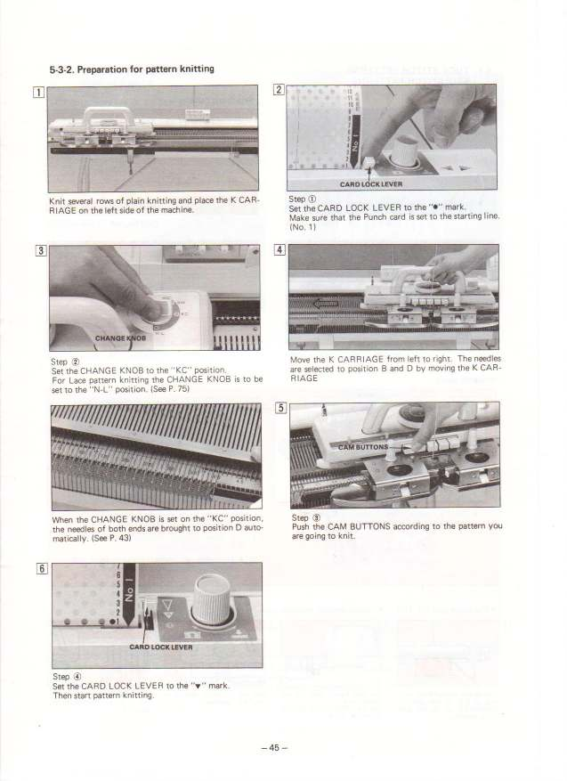

Brother Punch-Card Knitting Machine (KH-860)
A household knitting machine whose program is a deck of hand-punched cards — Jacquard's loom, on a kitchen counter

Overview
The Brother KH-860 is a domestic flatbed knitting machine from the 1980s whose most distinctive feature is a punched-card pattern reader. Throughout that decade, Brother and Silver Reed dominated the home knitting-machine market with models that programmed their patterns the old way: you drew a design on squared paper, punched the holes by hand, and fed the finished card through a reader mounted above the needle bed as you pushed the carriage across. Each hole in a card row set a cam so the corresponding needle took a different path through the carriage — knitting, slipping, or tucking the yarn. One card row equalled one knitted row, so a repeating card produced a band of Fair Isle or textured pattern across the fabric. The principle descends unbroken from Jacquard's punched-card loom (1804) and Hollerith's tabulating cards — transplanted to a domestic appliance that most households used to make sweaters rather than compute.
Deep dive
The interaction model is wonderfully anachronistic and thoroughly physical. You design on squared paper, punch the holes by hand, then load the card into a reader that advances one row per carriage pass. The card literally is the program: one row = one knitted row, and each punched position mechanically selects whether that needle knits, slips, or tucks on that pass. There is no microprocessor, no display, no menu — the "code" is a tangible object you hold, punch, and feed, and the output is fabric rather than computation. It is the closest thing most people ever had to operating a Jacquard loom at home.
The lineage is direct and famous: Jacquard's punched-card loom of 1804 stored a weaving pattern as a chain of cards read by hooks; Herman Hollerith repurposed the card for tabulating the 1890 US census, founding what became IBM. The domestic knitting machine is a third great household expression of the same idea. The museum already holds the Pfaff Creative 1471, the microprocessor sewing machine that displaced cam-controlled stitches — the punch-card knitting machine is the mirror image, keeping the physical program, the cam-and-needle logic, and the hand-punched card long after the sewing machine went digital. The two appliances show two answers to the same domestic-programming problem.
Technically the card is a pattern selector rather than a stored program in the von Neumann sense — it switches needles between alternate cam pathways instead of holding instructions in memory. But from a human-computer-interaction standpoint the distinction barely matters: the user experiences a physical punched program whose rows map one-to-one onto output rows, exactly as a Jacquard weaver or an early tabulating clerk did. It is one of the most tactile "programming" interactions a non-programmer ever performed in a domestic setting.
Team & pioneers
- Brother Industries. Japanese maker of the KH-series flatbed knitting machines including the KH-860, a leading punch-card model of the 1980s.
- Silver Seiko Ltd. (Silver Reed). The other dominant domestic knitting-machine maker of the era, also using punch-card pattern readers.